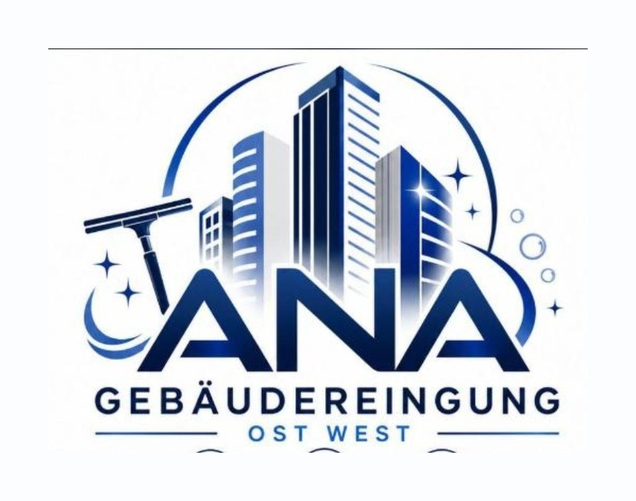

Unterhaltsreinigung
Regelmäßige Pflege von Böden, Oberflächen, Sanitär- und Gemeinschaftsbereichen. Häufigkeit und Leistungsumfang richten sich nach Nutzung und Anforderungen Ihres Objekts.
ANA Gebäudereinigung Ost West
Von der laufenden Unterhaltsreinigung bis zur intensiven Grundreinigung: Wir stimmen Leistung, Intervall und Einsatzzeit auf Ihren Bedarf ab.

Regelmäßige Pflege von Böden, Oberflächen, Sanitär- und Gemeinschaftsbereichen. Häufigkeit und Leistungsumfang richten sich nach Nutzung und Anforderungen Ihres Objekts.
Saubere Arbeitsplätze, gepflegte Küchen und hygienische Sanitärbereiche. Die Reinigung kann vor, während oder nach Ihren üblichen Geschäftszeiten erfolgen.
Streifenfreie Reinigung von Fenstern, Glastüren und weiteren Glasflächen. Rahmen, Falze und Fensterbänke können nach Bedarf einbezogen werden.
Regelmäßige Reinigung von Eingangsbereichen, Treppen, Podesten, Handläufen und Aufzügen für einen gepflegten Eindruck im gesamten Haus.
Intensive Reinigung hartnäckiger Verschmutzungen sowie Entfernung von Staub und Rückständen nach Bau-, Renovierungs- oder Umbauarbeiten.
Für wen wir reinigen
Für Hausverwaltungen, Unternehmen, öffentliche und soziale Einrichtungen sowie private Auftraggeber in Thüringen.
Abgestimmte Reinigungszeiten und klare Zuständigkeiten für planbare Ergebnisse.
Systematische Reinigung mit Blick für hygienisch und optisch wichtige Details.
Leistungsumfang und Intervalle werden auf Nutzung und Objektgröße zugeschnitten.
Unverbindliches Angebot
Nennen Sie uns Objektart, Größe, gewünschte Leistungen und Reinigungsintervall. Wir besprechen die Details persönlich mit Ihnen.